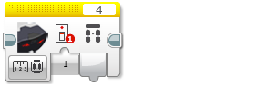

					<table cellpadding="0" cellspacing="0" border="0"><tbody><tr><td>
	
						<h1>红外传感器模块<a name="top"></a></h1>
		<div id="block_195" class="block blockHeader">
				<table cellspacing="0" cellpadding="0" border="0">
			<tbody><tr>
				<td valign="top" class="image"></td>
				<td valign="top" class="description"><div class="text-wrapper">红外传感器模块从红外传感器获取数据。可以在“近程”、“信标”和“远程”模式中测量传感器数据，并获取数字输出。还可以将传感器数据与输入值进行比较并获取逻辑（“真”或“伪”）输出。<br>
<br>
有关红外传感器提供的数据的更多信息和编程示例，请参见<a href="./index.html?id=UsingSensors_Infrared">使用红外传感器</a>。</div></td>
			</tr>
		</tbody></table>
			</div>
	<div id="block_766" class="block blockTip">
		<div class="title">提示和技巧</div>
		<div class="boxContent">
			<div class="description">提示：红外传感器模块通过<a href="./index.html?id=DataWires">数据线</a>输出数据。有关无需数据线的其他使用红外传感器的方式，请参见<a href="./index.html?id=UsingSensors_Infrared">使用红外传感器</a>。</div>
				</div>
	</div>
	<div id="block_196" class="block blockChaptor">
		<div class="title">选择传感器端口和模式</div>
		<div class="description"><br>
<br>
 端口选择器 <br>
 模式选择器<br>
 输入<br>
 输出<br>
<br>
使用模块顶部的<a href="./index.html?id=PortSelector">端口选择器</a>可确保传感器端口号（1、2、3 或 4）与红外传感器连接的 EV3 程序块上的端口匹配。<br>
<br>
使用模式选择器可为模块选择模式。可用<a href="./index.html?id=InfraredSensor#InputsAndOutputs">输入和输出</a>会因模式而异。</div>
	</div>
	<div id="block_197" class="block blockChaptor">
		<div class="title">模式</div>
		<div class="description"></div>
	</div>
	<div id="block_198" class="block blockMode">
		<div class="title"><a name="Mode_MeasureProximity" style="position:relative; top:-10px;"></a>测量 － 近程</div>
		<div class="description"><br>
<br>
“测量 － 近程”模式在“近程”模式中使用红外传感器。接近程度在<a href="./index.html?id=InfraredSensor#Proximity">近程</a>中输出。</div>
			<div class="links">有关更多信息，请参见<a href="./index.html?id=UsingSensors_Infrared_Proximity">使用红外传感器“近程”模式</a>中的编程示例 2。</div>
	</div>
	<div id="block_199" class="block blockMode">
		<div class="title"><a name="Mode_MeasureBeaconSeeker" style="position:relative; top:-10px;"></a>测量 － 信标 <a name="Mode_MeasureBeaconSeekerDataloggingHeading" style="position:relative; top:-10px;"></a>  <a name="Mode_MeasureBeaconSeekerDataloggingProximity" style="position:relative; top:-10px;"></a></div>
		<div class="description"><br>
<br>
“测量 － 信标”模式在“信标”模式中使用红外传感器。将<a href="./index.html?id=InfraredSensor#Channel">频道</a>设置为要检测的信标频道。信标接近程度在<a href="./index.html?id=InfraredSensor#Proximity">近程</a>中输出，信标标头在<a href="./index.html?id=InfraredSensor#Heading">标头</a>中输出。<br>
<br>
如果检测到信标，则<a href="./index.html?id=InfraredSensor#Valid">已检测</a>输出为“真”。如果未检测到信标，则<a href="./index.html?id=InfraredSensor#Valid">已检测</a>为“伪”，<a href="./index.html?id=InfraredSensor#Proximity">近程</a>为 100，<a href="./index.html?id=InfraredSensor#Heading">标头</a>为 0。</div>
			<div class="links">有关更多信息，请参见<a href="./index.html?id=UsingSensors_Infrared_Beacon">使用红外传感器“信标”模式</a>。</div>
	</div>
	<div id="block_200" class="block blockMode">
		<div class="title"><a name="Mode_MeasureBeaconRemote" style="position:relative; top:-10px;"></a>测量 － 远程</div>
		<div class="description"><br>
<br>
“测量 － 远程”模式在“远程”模式中使用红外传感器。将<a href="./index.html?id=InfraredSensor#Channel">频道</a>设置为 IR 信标使用的频道。当前按压的按钮或按钮组合的按钮 ID 在<a href="./index.html?id=InfraredSensor#Button">按钮 ID</a> 中输出。</div>
			<div class="links">有关更多信息，请参见<a href="./index.html?id=UsingSensors_Remote">使用红外传感器“远程”模式</a>。</div>
	</div>
	<div id="block_201" class="block blockMode">
		<div class="title"><a name="Mode_CompareProximity" style="position:relative; top:-10px;"></a>比较模式 <a name="Mode_CompareBeaconSeekerHeading" style="position:relative; top:-10px;"></a>  <a name="Mode_CompareBeaconSeekerProximity" style="position:relative; top:-10px;"></a></div>
		<div class="description"><br>
<br>
“比较 － 近程”、“比较 － 信标标头”和“比较 － 信标近程”模式使用所选<a href="./index.html?id=InfraredSensor#Comparison">比较类型</a>，将传感器数据与<a href="./index.html?id=InfraredSensor#Threshold">阈值</a>进行比较。“真/伪”结果在<a href="./index.html?id=InfraredSensor#Result">比较结果</a>中输出，传感器数据以所选传感器数据类型输出。</div>
			<div class="links">有关红外传感器提供的数据的更多信息，请参见<a href="./index.html?id=UsingSensors_Infrared">使用红外传感器</a>。</div>
	</div>
	<div id="block_204" class="block blockMode">
		<div class="title"><a name="Mode_CompareRemote" style="position:relative; top:-10px;"></a>比较 － 远程</div>
		<div class="description"><br>
<br>
“比较 － 远程”模式在“远程”模式中使用红外传感器。可以在<a href="./index.html?id=InfraredSensor#SetofremotebuttonIDs">远程按钮 ID 集合</a>中选择一个或多个按钮 ID 值。如果当前在 IR 信标上按压了所选按钮中的任何按钮，则<a href="./index.html?id=InfraredSensor#Result">比较结果</a>将为“真”。<a href="./index.html?id=InfraredSensor#Button">按钮 ID</a> 输出将是当前按压的按钮或按钮组合的按钮 ID。</div>
			<div class="links">有关更多信息，请参见<a href="./index.html?id=UsingSensors_Remote">使用红外传感器“远程”模式</a>。</div>
	</div>
	<div id="block_205" class="block blockChaptor">
		<div class="title"><a name="InputsAndOutputs" style="position:relative; top:-10px;"></a>输入与输出 <a name="Parameters" style="position:relative; top:-10px;"></a></div>
		<div class="description">可用于红外传感器模块的输入取决于所选模式。可以将输入值直接输入到模块中。或者，可以通过<a href="./index.html?id=DataWires">数据线</a>从其他编程模块的输出提供输入值。</div>
	</div>
	<div id="block_206" class="block blockTable ">
		<table class="blockTable">
		

			<tbody><tr>
<th>输入</th><th>类型</th><th>允许的值</th><th>备注</th>			</tr>
<tr><td>频道 <a name="Channel" style="position:relative; top:-10px;"></a></td><td>数字</td><td>1 － 4</td><td>IR 信标上要检测的频道。</td></tr><tr><td>比较类型 <a name="Comparison" style="position:relative; top:-10px;"></a></td><td>数字</td><td>0 － 5</td><td>0：=（等于）<br>
1：≠（不等于）<br>
2：&gt;（大于）<br>
3：≥（大于或等于）<br>
4：&lt;（小于）<br>
5：≤（小于或等于）</td></tr><tr><td>阈值 <a name="Threshold" style="position:relative; top:-10px;"></a>  <a name="HeadingThreshold" style="position:relative; top:-10px;"></a></td><td>数字</td><td>任何数字</td><td>要将传感器数据与之进行比较的值</td></tr><tr><td>远程按钮 ID 集合 <a name="SetofremotebuttonIDs" style="position:relative; top:-10px;"></a></td><td>数字排列</td><td>每个元素： <br>
0 － 11</td><td>要测试的按钮 ID。<br>
请参见<a href="./index.html?id=UsingSensors_Remote">使用红外传感器“远程”模式</a>。</td></tr>		</tbody></table>
	</div>
	<div id="block_207" class="block blockStep">
		<div class="title"></div>
		<div class="description">可用输出取决于所选模式。要使用某个输出，请使用<a href="./index.html?id=DataWires">数据线</a>将该输出连接到另一个编程模块</div>
	</div>
	<div id="block_208" class="block blockTable ">
		<table class="blockTable">
		

			<tbody><tr>
<th>输出</th><th>类型</th><th>值</th><th>备注</th>			</tr>
<tr><td>近程 <a name="Proximity" style="position:relative; top:-10px;"></a></td><td>数字</td><td>0 至 100</td><td>信标或物体接近程度。0 表示非常接近，100 表示遥远。如果完全未检测到信标或物体，则“近程”为 100。</td></tr><tr><td>已检测 <a name="Valid" style="position:relative; top:-10px;"></a></td><td>逻辑</td><td>真/伪</td><td>如果检测到信标，则为“真”。</td></tr><tr><td>标头 <a name="Heading" style="position:relative; top:-10px;"></a></td><td>数字</td><td>-25 至 25</td><td>信标标头。0 表示信标位于传感器正前方，负值表示位于左侧，正值表示位于右侧。</td></tr><tr><td>按钮 ID <a name="Button" style="position:relative; top:-10px;"></a></td><td>数字</td><td>0 － 11</td><td>标识在 IR 信标上按压的按钮或按钮组合。<br>
请参见<a href="./index.html?id=UsingSensors_Infrared">使用红外传感器</a>“远程”模式。</td></tr><tr><td>比较结果 <a name="Result" style="position:relative; top:-10px;"></a></td><td>逻辑</td><td>真/伪</td><td>比较模式的“真/伪”结果。</td></tr>		</tbody></table>
	</div>
	
			<div id="quick">
				<div class="header"><a href="./index.html?id=InfraredSensor#header">红外</a></div>
					<div class="quickText">快速链接</div>
					
					<ul>
	<li><a href="./index.html?id=InfraredSensor#InputsAndOutputs">输入与输出</a></li>					</ul>
			</div>
	
	</td></tr></tbody></table>